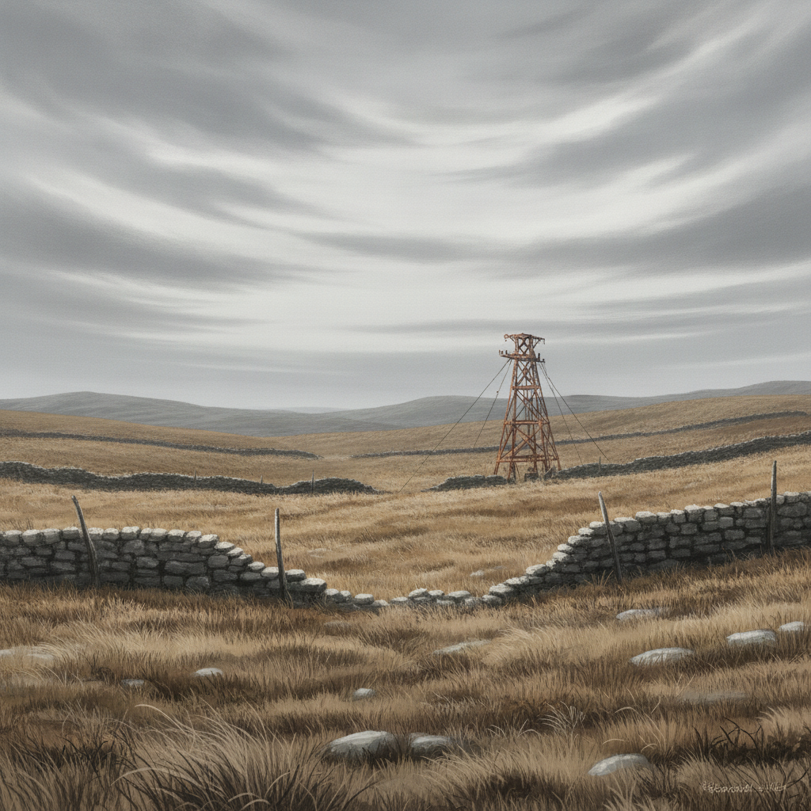

A stolen broadcast-horn crackles with static. Or perhaps we witness it ourselves, hidden in the shadows of an unfamiliar public square.
Another stranded pair, caught fleeing. Interrogated. Publicly executed.
Their faces, once familiar from the college halls, are now stark on a scrying-plate. The world's brutality is undeniable.
Grief settles into something colder and clearer. Whatever we do next, we are no longer only surviving — and the choice of who to become can no longer be put off.